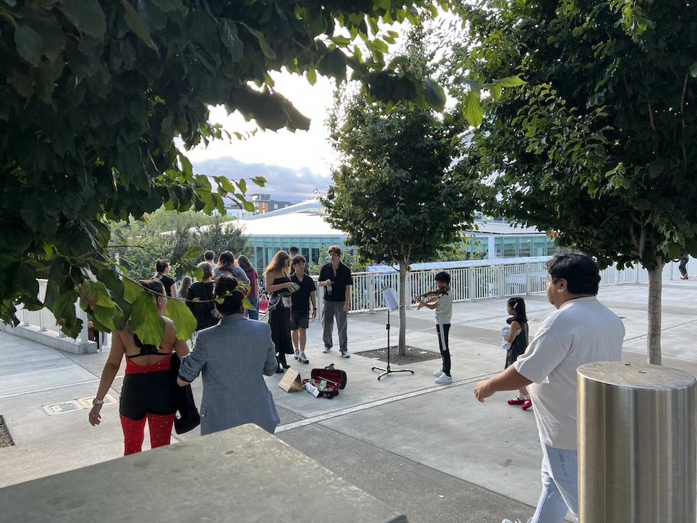

About PNW Soundwave

Our Mission
PNW Soundwave is a 501(c)(3) nonprofit organization organized and operated exclusively for charitable and educational purposes. We use the power of music to support deaf, hard-of-hearing, and special-needs children, and to enrich the lives of seniors through live musical outreach.
Our programs provide direct services including live performances, volunteer music training, donations of hearing aids and musical instruments, and advocacy for inclusive participation in music and community activities. All of our activities are conducted without profit to any private individual or shareholder.
- Advancing access to music for deaf and hard-of-hearing children
- Donating hearing aids, instruments, and educational resources
- Delivering live music performances to senior care communities
- Conducting community advocacy for children with special needs
Our Programs
PNW Soundwave carries out its charitable mission through four core program areas. All programs are provided at no cost to beneficiaries.
Music Outreach & Performance
Our volunteer musicians perform live music at senior care centers, schools, public spaces, and community events. These performances are offered free of charge and are designed to foster inclusion, raise awareness for special-needs communities, and bring joy to audiences of all ages and abilities.
Resource Donations
We donate hearing aids, musical instruments, adaptive equipment, and educational supplies to qualifying families and nonprofit organizations that serve deaf and hard-of-hearing children. Recipients must meet eligibility criteria. We do not provide cash donations to individuals or organizations.
Volunteer Development
We recruit, train, and develop student and community volunteers to serve as musical advocates. Volunteer training sessions, led by professional instructors, ensure participants maintain strong musicianship skills in service of the organization's charitable mission.
Global Outreach
PNW Soundwave extends its mission internationally, conducting advocacy performances and delivering resources to children in underserved communities abroad. Our global efforts are carried out in partnership with local nonprofits and community organizations to ensure responsible and effective impact.
Tax-Exempt Status & Governance
PNW Soundwave is recognized as a tax-exempt organization under Section 501(c)(3) of the Internal Revenue Code. Contributions to PNW Soundwave are tax-deductible to the extent permitted by law.
The organization is governed by a volunteer board of directors and operates in strict compliance with IRS requirements for charitable organizations. No part of the net earnings of PNW Soundwave inures to the benefit of any private shareholder or individual. The organization does not participate in, or intervene in, any political campaign on behalf of or in opposition to any candidate for public office.
For questions about our tax-exempt status, donation receipts, or governance, please contact us at pnwsoundwave@gmail.com.